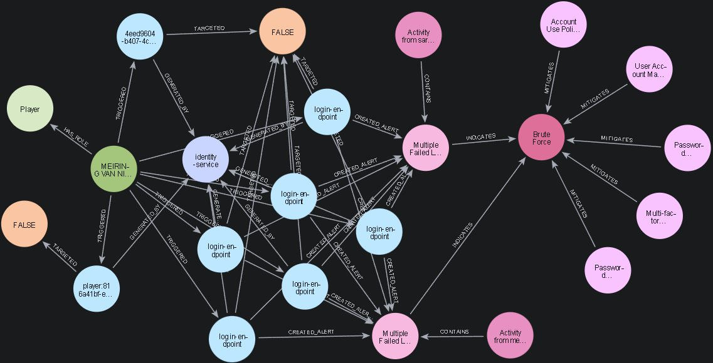
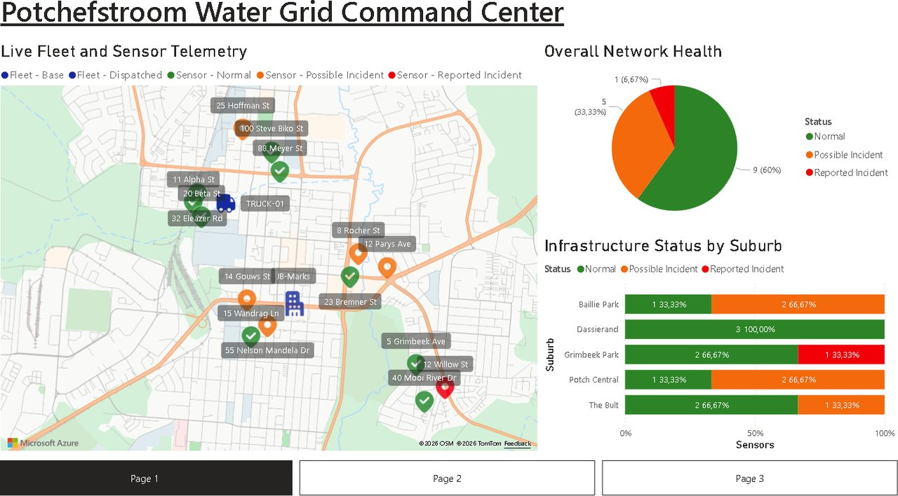

Meiring van Niekerk
Software Engineer
Hi, my name is Meiring. I’m a passionate software engineer focused on creating digital experiences that are both visually engaging and user-friendly. I take pride in designing intuitive interfaces that not only function seamlessly but also delight and inspire users.
Languages & tools
Contact
- meiring0505@gmail.com
- Potchefstroom / Cape Town, South Africa
- linkedin.com/in/meiring-van-niekerk
- github.com/Meiring47817909
Education
In progress · expected Dec 2026
BSc Honours in Computer Science & IT
Completed Dec 2025
BSc Information Technology, with distinction

Hobby: Squash
A fun, high-energy sport that challenges your reflexes, sharpens your focus, and keeps you fit! I am a member at Kuils River Squash Club.
Loading the CV…
The CV couldn't be shown here. Open it in a new tab or use Download above.
2026
SmartStock-NWU
Stock and loan management for the NWU IT store (BICS). Staff record stock coming in and going out, manage the product catalogue, lend equipment and track returns, with low-stock alerts, reports, an audit log and email notifications. Product photos are uploaded through the server after a role check.
Tech stack:
- Next.js 16 (App Router) and TypeScript
- PostgreSQL 17 with Drizzle ORM
- Firebase Auth and Storage
- Vercel and Google Cloud SQL, Vitest

PotchMatch: SOC monitoring and GraphRAG
A microservices squash platform extended with a Security Operations Centre. Every service ships security events to a SOC service, five detection rules raise alerts, and the alerts are linked in a Neo4j knowledge graph to MITRE ATT&CK and OWASP threats. Administrators ask questions in plain English through GraphRAG, which runs guarded, read-only Cypher and gives cited answers.
Tech stack:
- .NET 10, ASP.NET Core and Angular 22
- Neo4j 5 and PostgreSQL 16
- Ocelot API Gateway, Consul and Polly
- Google Gemini, Docker Compose

PotchPulse: Smart Water Infrastructure Monitoring
A real-time streaming platform on Microsoft Azure that monitors Potchefstroom's water network. Simulated pressure sensors, a maintenance truck and citizen reports stream through Event Hubs and Stream Analytics into Cosmos DB, an Azure Function adds AI sentiment analysis, and Power BI shows a live command centre. Built for ITRI613 (Databases I).
Tech stack:
- Python (sensor, social media and fleet simulation)
- Azure Event Hubs and Stream Analytics
- Azure Cosmos DB and Azure Functions
- Azure AI Language, Power BI (DirectQuery)
2025

Carwash business model
This project entails the necessary SQL scripts to operate a carwash business that stores employee, manager, car, customer, washer and transaction information. Includes Table and View create statements with supplemented data and queries for reporting purposes.
Oracle:
- SQL
2024

DREAMFLIX Cinema
DREAMFLIX Cinema is a hypothetical cinema that requires a desktop application for employees to book tickets for customers and reporting functionality for strategic decision making. Additionally, employees can be managed, and new movies can be added.
Visual studio 2022:
- Windows Forms App

Brighton Medical
This application was developed for a hypothetical medical practice called Brighton Medical that would like to create desktop and web applications that would allow people to search, book and view doctor’s appointments.
Visual studio 2022:
- Windows Forms App
- ASP.NET Web Application (.NET Framework)